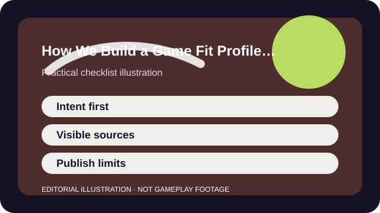

QUICK ANSWER
The short version
Start with the player's decision, use official sources for live facts, separate stable design from changeable service details, and publish the limits instead of hiding them.
This site used to generate generic review-style pages because the format was easy to repeat. The overhaul keeps the old URL for compatibility, but the method is different now: each page begins with the reader's decision rather than with a fake scored verdict.
That means a game page should tell you what kind of player the game fits, what the first session is really asking for, what the business model does, and what facts may change after publication. It should never pretend we tested every platform hands-on when we did not.

CHECKLIST
What to confirm before you change anything
- Define the install or return-to-play question a real player is trying to answer.
- Collect official links for the game's live facts before drafting editorial interpretation.
- Separate stable design fit from changeable service details such as passes, rotations, and platform support.
- Publish a visible source section and a visible limitations section on the page itself.
- Use dates honestly so readers can see when the page was last materially checked.
Method beats volume here. A smaller number of clear, sourced profiles creates more trust than a larger number of generic pseudo-reviews that all sound alike.
SCENARIO
When a live game changes season but the player-fit question stays the same
A battle pass update or new event can matter, but it does not automatically make the whole game a different fit for every reader. The profile should change when the decision context changes, not merely because a patch note exists.
That is why the method separates the durable loop from the fast-moving service wrapper. Readers need both. They also need to know which side of the page is more likely to age first.
PROCESS
A repeatable way to work through it
Start with the player's intent
Ask what the reader is trying to decide: time fit, social fit, spending risk, onboarding burden, platform support, or something else.
Build page sections from game-specific fields
Use structured fields such as session length, social shape, spending notes, and first-session plan so pages do not collapse into interchangeable boilerplate.
Write the limitations before you publish
If you know what was not tested or what could change quickly, say so plainly rather than burying the uncertainty.
Move dates only with material updates
A new timestamp should mean the body, source checks, or structured facts were meaningfully refreshed.
The value of a fit profile is not that it sounds authoritative. It is that the reader can see why the conclusion exists, where the live facts came from, and where uncertainty still remains.
COMMON MISTAKES
What usually makes the problem worse
Writing verdict-first filler
Generic praise or criticism that could apply to dozens of games is a sign the model is drifting back toward mass production.
Implying firsthand testing you did not do
Authority collapses fast when a page sounds hands-on but cannot prove what was actually checked.
Hiding live-service volatility
Battle passes, store terms, and platform features can change; pretending they are stable only makes the page less useful.
SUCCESS CRITERIA
How to know the change actually worked
- A reader can understand the game's likely fit in a few sections without reading generic filler.
- Official links and checked dates are visible instead of implied.
- The page explains what may change after publication.
- The title matches the real question being answered rather than defaulting to a boilerplate review formula.
Good editorial structure removes the need for fake certainty. The page becomes more useful because it is specific about what it knows and honest about what it cannot claim.
SOURCES AND LIMITS
Where to verify live details
- A sourced fit profile is not a substitute for hands-on accessibility testing across every device or assistive need.
- Official pages are the best source for live terms, but they are also the place where changes can happen fastest.
- No one article format solves every decision, which is why related guides and hubs still matter.
Menu names, defaults, and device behavior can change after updates. Use the linked official support surfaces for the current live details and keep this guide for the process around them.